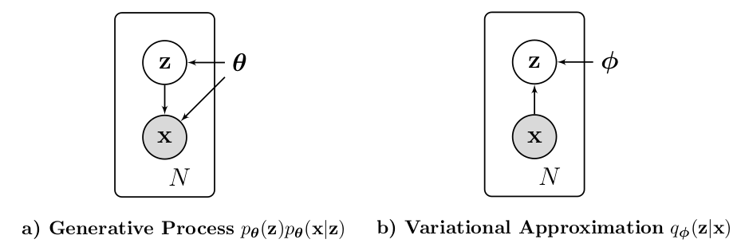

Kingma and Welling (2013) introduced the Variational Auto-Encoder (VAE) to showcase how their Auto-Encoding Variational Bayes (AEVB) algorithm can be used in practice. Assuming i.i.d. datasets and continuous latent variables, the AEVB algorithm learns an approximate probabilistic encoder \(q_{\boldsymbol{\phi}}(\textbf{z}|\textbf{x})\) jointly with the probabilisitc decoder \(p_{\boldsymbol{\theta}}
(\textbf{x}|\textbf{z})\) (where \(\boldsymbol{\phi},
\boldsymbol{\theta}\) parametrize the corresponding distributions) by learning the optimal model parameters \(\boldsymbol{\phi},
\boldsymbol{\theta}\) through optimizing an objective function with standard gradient ascent methods. In summary, a VAE is probabilistic autoencoder which uses variational inference to regularize the coding space. Furthermore, a VAE is a deep generative model as sampling from the coding space is possible, i.e., new observations can be generated.
Model Description
The AEVB algorithm basically assumes a generative process, introduces a variational approximation (see figure below) and optimizes the model parameters by maximizing an objective function. The objective function consists of the (reparametrized) variational lower bound of each datapoint. Reparametrization is necessary to allow the explicit formulation of gradients with respect to the model parameters.

The directed graphical models represent the assumed generative process (a) and the variational approximation of the intractable posterior (b) in the AEVB algorithm.
Objective Function Derivation: Let \(\textbf{X}=\{\textbf{x}^{(i)}\}_{i=1}^{N}\) denote the dataset consisting of \(N\) i.i.d. samples and let \(\textbf{z}\) denote the unobserved continuous random variable (i.e., hidden or code variable). Kingma and Welling (2013) assume that each observed sample \(\textbf{x}^{(i)}\) comes from a generative process in which: Firstly, a hidden variable \(\textbf{z}^{(i)}\) is generated from a prior distribution \(p_{\boldsymbol{\theta}} (\textbf{z})\). Secondly, \(\textbf{x}^{(i)}\) is generated from the conditional distribution \(p_{\boldsymbol{\theta}}(\textbf{x}|\textbf{z}^{(i)})\). Note that we do not know \(\boldsymbol{\theta}\) nor do we have information about \(\textbf{z}^{(i)}\). In order to recover this generative process, they introduce \(q_{\boldsymbol{\phi}}(\textbf{z}|\textbf{x})\) as an approximation to the intractable true posterior1\(p_{\boldsymbol{\theta}} (\textbf{z}|\textbf{x})\). The marginal log likelihood of each individual datapoint \(\textbf{x}^{(i)}\) can then be stated as follows (see Eric Jang’s amazing blog post for detailed derivation)
where \(D_{KL}(\cdot)\) denotes the KL divergence of the approximate from the true posterior (this quantity remains unknown since the true posterior \(p_{\boldsymbol{\theta}} (\textbf{z}|\textbf{x}^{(i)})\) is intractable). \(\mathcal{L} \left(\boldsymbol{\theta},
\boldsymbol{\phi}, \textbf{x}^{(i)}\right)\) is called the variational lower bound or evidence lower bound (ELBO). The goal is to optimize \(\boldsymbol{\phi}, \boldsymbol{\theta}\) such that variational lower bound is maximized, thereby we indirectly maximize the marginal log likelihood. The variational lower bound can rewritten such that the objective function is obtained (also derived in Eric Jang’s blog post)
which results in an unbiased estimate. Sampling \(\textbf{z}^{(k)}\sim
q_{\boldsymbol{\phi}}(\textbf{z}|\textbf{x}^{(i)})\) can be understood as encoding the observed input \(\textbf{x}^{(i)}\) into a code \(\textbf{z}^{(k)}\) using the probabilistic encoder \(q_{\boldsymbol{\phi}}\). Clearly, the expectation is maximized when the decoder \(p_{\boldsymbol{\theta}}\) maps the encoded input \(\textbf{z}^{(k)}\) back the original input \(\textbf{x}^{(i)}\), i.e., assigns high probability to \(p_{\boldsymbol{\theta}} \left( \textbf{x}^{(i)} | \textbf{z}^{(i)} \right)\).
Regularization Term: The KL divergence is non-negative and only zero if both distributions are identical. Thus, maximizing this term forces the encoder distribution \(q_{\boldsymbol{\phi}}\) to be close to the prior \(p_{\boldsymbol{\theta}}(\textbf{z})\). In VAEs, the prior is typically set to be an isotropic normal distribution resulting in a regularized code space, i.e., encouraging a code space that is close to a normal distribution.
Reparametrization Trick: While the KL-divergence \(D_{KL} \left(
q_{\boldsymbol{\phi}} \left( \textbf{z} | \textbf{x}^{(i)} \right),
p_{\boldsymbol{\theta}} (\textbf{z})\right)\) (i.e., the regularization term) can often be integrated analytically, the second term \(\mathbb{E}_{q_{\boldsymbol{\phi}}(\textbf{z}|\textbf{x}^{(i)})} \left[ \log
p_{\boldsymbol{\theta}} \left( \textbf{x}^{(i)}| \textbf{z} \right) \right]\) (i.e., the reconstruction accuracy) requires sampling from \(q_{\boldsymbol{\phi}}\). There are two downsides associated wih sampling from \(q_{\boldsymbol{\phi}}\) approaches:
Backpropagation does not work with a sampling operation, i.e., the implementation of VAEs would be more difficult.
The usual Monte Carlo gradient estimator (which relies on sampling from \(q_{\boldsymbol{\phi}}\)) w.r.t. \(\boldsymbol{\phi}\) exhibits very high variance.
Substitute sampling \(\textbf{z} \sim q_{\boldsymbol{\phi}}\) by using a deterministic mapping \(\textbf{z} = g_{\boldsymbol{\phi}}
(\boldsymbol{\epsilon},
\textbf{x})\) with the differential transformation \(g_{\boldsymbol{\phi}}\) of an auxiliary noise variable \(\boldsymbol{\epsilon}\) with \(\boldsymbol{\epsilon}\sim p(\boldsymbol{\epsilon})\).
As a result, the reparametrized objective function can be written as follows
with \(\boldsymbol{\epsilon} \sim p(\boldsymbol{\epsilon})\). Note that Kingma and Welling denote this estimator as the second version of the Stochastic Gradient Variational Bayes (SGVB) estimator. Assuming that the KL-divergence can be integrated analytically, the derivatives \(\nabla_{\boldsymbol{\theta},\boldsymbol{\phi}} \widetilde{L}\) can be taken (see figure below), i.e., this estimator can be optimized using standard stochastic gradient methods.
The computation graphs summarize the difference between the computation of the reconstruction accuracy in the original objective (a) and the reparametrized objective (b). Circles indicate a sampling operation through which backpropagation is not allowed.
To increase stability and performance, Kingma and Welling introduce a minibatch estimator of the lower bound:
where \(\textbf{X}^{M} = \left\{ \textbf{x}^{(i)} \right\}_{i=1}^{M}\) denotes a minibatch of \(M\) datapoints from the full dataset \(\textbf{X}\) of \(N\) datapoints.
Learning the Model
Learning the probabilistic encoder \(q_{\boldsymbol{\phi}}\) and decoder \(p_{\boldsymbol{\theta}}\) comes down to learning the optimal model parameters \(\boldsymbol{\phi}, \boldsymbol{\theta}\) using the AEVB algorithm which can be summarized in 5 steps:
Initialize model parameters \(\boldsymbol{\phi}, \boldsymbol{\theta}\) randomly.
Sample random minibatch \(\textbf{X}^{M} = \left\{ \textbf{x}^{(i)} \right\}_{i=1}^{M}\).
Update model parameters \(\boldsymbol{\phi}, \boldsymbol{\theta}\) by taking a gradient ascent step.
Repeat steps 2-4 until model parameters converged
VAE Implementation
A VAE simply uses deep neural networks (DNNs) as function approximators to parametrize the probabilistic encoder \(q_{\boldsymbol{\phi}}\) and decoder \(p_{\boldsymbol{\theta}}\). The optimal parameters \(\boldsymbol{\phi}, \boldsymbol{\theta}\) are learned jointly by training the VAE using the AEVB algorithm.
Schematic of a standard VAE
Regularization Term: Typically, the prior over the latent variables is set to be the centered isotropic Gaussian, i.e., \(p_{\boldsymbol{\theta}} (\textbf{z}) \sim
\mathcal{N} (\textbf{0}, \textbf{I})\). Note that this prior is needed to compute the regularization term in the objective function. Furthermore, it is commonly assumed that the true posterior \(p_{\boldsymbol{\theta}}\left(\textbf{z} | \textbf{x}^{(i)}\right)\) may be approximated by \(q_{\boldsymbol{\phi}} \left(\textbf{z} |
\textbf{x}^{(i)} \right) \sim \mathcal{N}\left(\boldsymbol{\mu}_E^{(i)},
\boldsymbol{\sigma}_E^{2 (i)} \textbf{I} \right)\) (subscripts denote that these parameters come from the encoder network). As a result, the regularization term can be integrated analytically leading to a term that only depends on \(\boldsymbol{\mu}_E^{(i)},
\boldsymbol{\sigma}_E^{2 (i)}\) (see Appendix B of Kingma and Welling)
Encoder/Decoder Network: Kingma and Welling (2013) use simple neural networks with only one hidden layer to approximate the parameters of the probabilistic encoder and decoder. As stated above, the encoder network is fixed to compute the parameters \(\boldsymbol{\mu}^{(i)}_E,
\boldsymbol{\sigma}_E^{(i)} \in \mathbb{R}^{L}\) of the Gaussian distribution \(\mathcal{N}\left(\boldsymbol{\mu}_E^{(i)},
\boldsymbol{\sigma}_E^{2 (i)} \textbf{I} \right)\). In fact, the encoder network takes a sample \(\textbf{x}^{(i)}\) and outputs the mean \(\boldsymbol{\mu}_E^{(i)}\) and logarithmized variance, i.e.,
Note that using the logarithmized version of the variance increases stability and simplifies the training2.
In principle, the encoder and decoder network are very similar only that the dimension of the input and output are reversed. While the encoder network is fixed to approximate a multivariate Gaussian with diagonal covariance structure, the decoder network can approximate a multivariate Gaussian (real-valued data) or Bernoulli (binary data) distribution.
Below is a simple Python class that can be used to instantiate the encoder or decoder network as described in appendix C of Kingma and Welling (2013).
Code
import torch.nn as nnfrom collections import OrderedDictclass CoderNetwork(nn.Module):r"""Encoder/Decoder for use in VAE based on Kingma and Welling Args: input_dim: input dimension (int) output_dim: output dimension (int) hidden_dim: hidden layer dimension (int) coder_type: encoder/decoder type can be 'Gaussian' - Gaussian with diagonal covariance structure 'I-Gaussian' - Gaussian with identity as covariance matrix 'Bernoulli' - Bernoulli distribution """def__init__(self, input_dim, hidden_dim, output_dim, coder_type='Gaussian'):super().__init__()assert coder_type in ['Gaussian', 'I-Gaussian' ,'Bernoulli'], \'unknown coder_type'self.input_dim = input_dimself.output_dim = output_dimself.coder_type = coder_typeself.coder = nn.Sequential(OrderedDict([ ('h', nn.Linear(input_dim, hidden_dim)), ('ReLU', nn.ReLU()) # ReLU instead of Tanh proposed by K. and W. ]))self.fc_mu = nn.Linear(hidden_dim, output_dim)if coder_type =='Gaussian':self.fc_log_var = nn.Linear(hidden_dim, output_dim)elif coder_type =='Bernoulli':self.sigmoid_mu = nn.Sigmoid()returndef forward(self, inp): out =self.coder(inp) mu =self.fc_mu(out)ifself.coder_type =='Gaussian': log_var =self.fc_log_var(out)return [mu, log_var]elifself.coder_type =='I-Gaussian':return muelifself.coder_type =='Bernoulli':returnself.sigmoid_mu(mu)return
Reconstruction Accuracy: Sampling from the encoder distribution is avoided by using the reparameterization trick, i.e., the latent variable \(\textbf{z}^{(i)}\) is expressed as a deterministic variable
and \(\odot\) denotes element-wise multiplication.
Note that we do not need to sample from the decoder distribution, since during training the reconstruction accuracy in the objective function only sums the log-likelihood of each sample \(\textbf{z}^{(i,
l)}\) and during test time we are mostly interested in the reconstructed \(\textbf{x}^{\prime}\) with highest probability, i.e., the mean.
The reconstruction accuracy in the reparametrized form is given by
where \(L\) denotes the number of samples used during the reparameterization trick. Depending on the chosen decoder distribution, the log-likelihood can be stated in terms of the estimated distribution parameters:
Gaussian distribution with diagonal covariance structure\(p_{\boldsymbol{\theta}} \sim \mathcal{N} \left( \textbf{x}^\prime | \boldsymbol{\mu}_D^{(i)} , \text{diag} \left( \boldsymbol{\sigma}_D^{2(i)} \right) \right)\)
with the original observation \(\textbf{x}^{(i)} \in \mathbb{R}^{D}\). In this form, the objective function is ill-posed since there are no limitations on the form of the normal distribution. As a result the objective function is unbounded, i.e., the VAE could learn the true mean \(\boldsymbol{\mu}_D^{(i)} =
\textbf{x}^{(i)}\) with arbitrary variance \(\boldsymbol{\sigma}_D^{2(i)}\) or huge variances with arbitrary means to maximize the log-likelihood (see this post). Note that in the encoder network, the prior \(p_{\boldsymbol{\theta}}(\textbf{z})\) is used to constrain the encoder distribution (i.e., the mean and variance).
Gaussian distribution with identity as covariance variance\(p_{\boldsymbol{\theta}} \sim \mathcal{N} \left( \textbf{x}^\prime | \boldsymbol{\mu}_D^{(i)} , \textbf{I} \right)\)
with the original observation \(\textbf{x}^{(i)} \in \mathbb{R}^{D}\). In this case the reconstruction accuracy is proportional to the negative mean squarred error which is typically used as the loss function in standard autoencoders.
with the original observation \(\textbf{x}^{(i)} \in \{0, 1\}^{D}\). In this case the reconstruction accuracy equals the negative binary cross entropy loss. Note that there are plenty of VAE implementations that use the binary cross entropy loss on non-binary observations, see discussions in this thread.
To put this into practice, below is a simple VAE Python class which will be used to compare the different decoder distributions.
Code
import torchfrom torch.distributions.multivariate_normal import MultivariateNormalclass VAE(nn.Module):r"""A simple VAE class based on Kingma and Welling Args: encoder_network: instance of CoderNetwork class decoder_network: instance of CoderNetwork class L: number of samples used during reparameterization trick """def__init__(self, encoder_network, decoder_network, L=1):super().__init__()self.encoder = encoder_networkself.decoder = decoder_networkself.L = L latent_dim = encoder_network.output_dimself.normal_dist = MultivariateNormal(torch.zeros(latent_dim), torch.eye(latent_dim))returndef forward(self, x): L =self.L z, mu_E, log_var_E =self.encode(x, L)# regularization term per batch, i.e., size: (batch_size) regularization_term = (1/2) * (1+ log_var_E - mu_E**2- torch.exp(log_var_E)).sum(axis=1)# upsample x and reshape batch_size = x.shape[0] x_ups = x.repeat(L, 1).view(batch_size, L, -1) ifself.decoder.coder_type =='Gaussian':# mu_D, log_var_D have shape (batch_size, L, output_dim) mu_D, log_var_D =self.decode(z)# reconstruction accuracy per batch, i.e., size: (batch_size) recons_acc = (1/L) * (-(0.5)*(log_var_D.sum(axis=2)).sum(axis=1)-(0.5) * ((1/torch.exp(log_var_D))*((x_ups - mu_D)**2) ).sum(axis=2).sum(axis=1))elifself.decoder.coder_type =='I-Gaussian':# mu_D has shape (batch_size, L, output_dim) mu_D =self.decode(z)# reconstruction accuracy per batch, i.e., size: (batch_size) recons_acc = (1/L) * (-(0.5) * ((x_ups - mu_D)**2 ).sum(axis=2).sum(axis=1))elifself.decoder.coder_type =='Bernoulli':# mu_D has shape (batch_size, L, output_dim) mu_D =self.decode(z) # reconstruction accuracy per batch, i.e., size: (batch_size)# corresponds to the negative binary cross entropy loss (BCELoss) recons_acc = (1/L) * (x_ups * torch.log(mu_D) + (1- x_ups) * torch.log(1- mu_D) ).sum(axis=2).sum(axis=1) loss =- regularization_term.sum() - recons_acc.sum()return lossdef encode(self, x, L=1):# get encoder distribution parameters mu_E, log_var_E =self.encoder(x)# sample noise variable L times for each batch batch_size = x.shape[0] epsilon =self.normal_dist.sample(sample_shape=(batch_size, L, ))# upsample mu_E, log_var_E and reshape mu_E_ups = mu_E.repeat(L, 1).view(batch_size, L, -1) log_var_E_ups = log_var_E.repeat(L, 1).view(batch_size, L, -1)# get latent variable by reparametrization trick z = mu_E_ups + torch.sqrt(torch.exp(log_var_E_ups)) * epsilonreturn z, mu_E, log_var_Edef decode(self, z):# get decoder distribution parametersifself.decoder.coder_type =='Gaussian': mu_D, log_var_D =self.decoder(z)return mu_D, log_var_Delifself.decoder.coder_type =='I-Gaussian': mu_D =self.decoder(z)return mu_Delifself.decoder.coder_type =='Bernoulli': mu_D =self.decoder(z)return mu_Dreturn
Let’s train the three different VAEs on the MNIST digits dataset
The true posterior could be calculated via Bayes theorem \(\displaystyle p_{\boldsymbol{\theta}} (\textbf{z}|\textbf{x}) =
\frac {p_{\boldsymbol{\theta}} (\textbf{x}|\textbf{z})
p_{\boldsymbol{\theta}} (\textbf{z})} {\int
p_{\boldsymbol{\theta}} (\textbf{x}|\textbf{z})
p_{\boldsymbol{\theta}} (\textbf{z}) d\textbf{z}}\). However, the integral in the denominator is intractable in practice.↩︎
Note that the variance is by definition greater than zero. Furthermore, the variance is typically relatively small. Thus, using the logarithmized variance as network output increases stability and performance (see this answer for details).↩︎